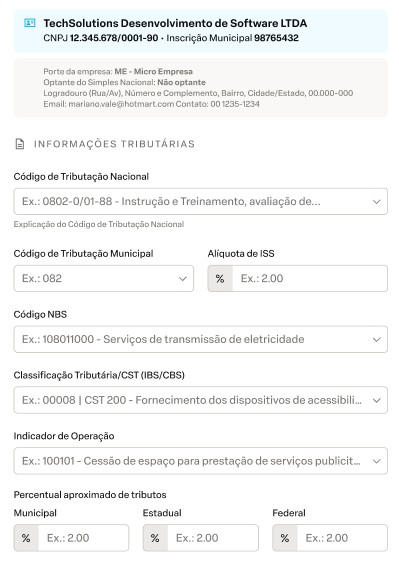
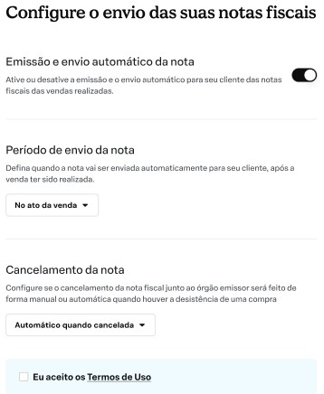
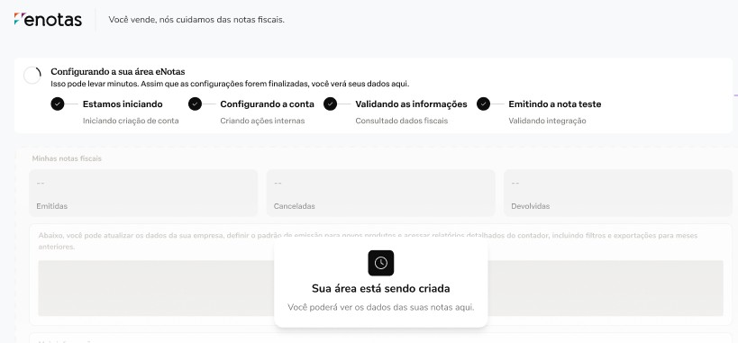
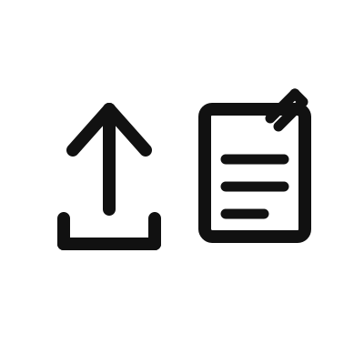

Qual tipo de nota você vai emitir?
Escolha o tipo de nota fiscal que melhor se adequa ao seu negócio para continuarmos com a configuração.
Ex.: Cursos, Mentorias, Vídeo Aulas
Selecione uma opção para continuar.
Configuração de NF-e (Produto)
Configure os ajustes necessários para a emissão de Nota Fiscal de Produto pelo eNotas.
- 1) Clique em Empresa.
- 2) Vá em Configurar conta ou Alterar cadastro.
- 3) Selecione a engrenagem no canto superior direito (Ajustes de NFe).
- 4) Na seção CNPJ da contabilidade autorizada a baixar o XML da NF-e, informe o CNPJ da sua contabilidade.
- 5) Clique em Salvar ajuste de NFe.

Etapa 1 de 6
Credenciamento portal de emissão NFS-e
Nesta etapa, vamos conectar o eNotas ao portal de emissão de NFS-e (Portal Nacional).
Caso ainda não tenha o seu CNPJ credenciado no portal, .
- O credenciamento pode ser realizado de duas formas: via login e senha de acesso ao Portal Nacional, ou via certificado digital A1 do seu CNPJ.
- Para garantir uma comunicação mais segura entre o eNotas e o Portal Nacional, recomendamos o uso do certificado digital.
Etapa 2 de 6
Preenchimento dos dados fiscais
Agora precisamos configurar os dados fiscais que serão utilizados na emissão das suas notas fiscais pelo eNotas. Esses dados garantem que as notas sejam emitidas corretamente para o seu tipo de serviço.
Não sabe como baixar o PDF ou XML de uma nota emitida no Portal Nacional? .
- Última nota emitida deste serviço com até 30 dias.
- O documento deverá estar legível, importe o documento original.
- A nota fiscal deverá ter sido emitida pelo Portal Nacional (NFS-e).
- Após importação do arquivo, será mostrado os campos preenchidos, valide as informações juntamente com a sua contabilidade.

Entenda cada campo da nota fiscal.
- As informações dos dados fiscais deverão ser preenchidas manualmente.
- Com as informações de uma nota já emitida e com o auxílio da sua contabilidade, siga com o preenchimento.

Etapa 3 de 6
Hora de conferir os dados
Com as informações já preenchidas no sistema de forma automática ou manual, revise as informações antes de continuar.
- Em caso de dúvidas referente aos campos preenchidos, consulte a sua contabilidade.
- Se necessário, poderá realizar a alteração de qualquer informação que foi preenchida.

Etapa 4 de 6
Configure o envio das suas notas fiscais
Nesta etapa, selecione como deseja que as vendas feitas na Hotmart, sejam emitidas pelo eNotas.
- Defina se deseja a emissão e envio da nota fiscal de forma automática após cada venda realizada.
- Configure quando a nota fiscal deverá ser emitida e enviada para o seu cliente.
- Assinale se deseja que os cancelamentos sejam realizados automaticamente, em caso de vendas canceladas pelo cliente.

Etapa 5 de 6
Emissão nota teste
Realizaremos a emissão de uma nota teste com os dados preenchidos, para validar se ficou tudo certinho!
- Você conseguirá visualizar a nota teste emitida pelo Portal Nacional ou pelo painel do eNotas.
- Após a emissão, o envio de cancelamento da nota teste emitida, será feito automaticamente.

Etapa 6 de 6
Configurações adicionais
Sua configuração principal está concluída! Se quiser explorar recursos extras ou precisar de ajuda com situações específicas, separamos alguns artigos que podem ser úteis.
- Os artigos abaixo cobrem cenários comuns que podem surgir no dia a dia da emissão.
- Em caso de dúvidas, nossa equipe de suporte está disponível para ajudar.
